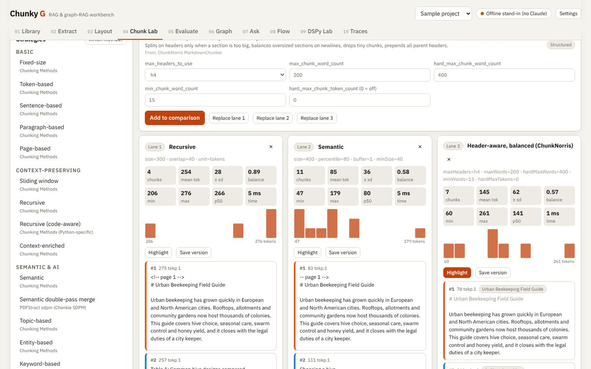
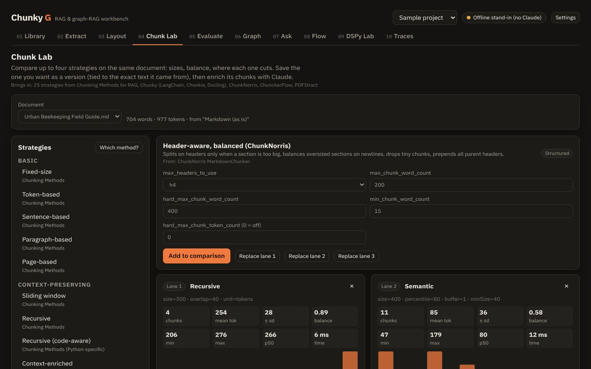
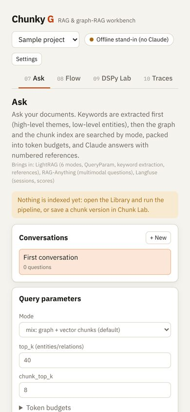

Same passage, four different cuts.
How a document is cut decides what retrieval can find. Switch the strategy and watch the chunks move; the Studio runs 25 of them on your own files.
One project, six steps, three tools around them.
Every screen reads and writes the same project in your browser. Run the steps one by one, or press one button in the Library to run them all on every document.
Extract
PDF, DOCX, HTML, sheets and notebooks become Markdown with page markers. Compare extractors side by side.
Layout
Titles, tables, lists, captions, headers and footers found on the page, in reading order.
Chunk
25 strategies in six families, four at a time, with sizes, balance and highlights.
Evaluate
Twelve metrics rank the strategies on your own text and question sets.
Graph
Entities and relationships from every chunk, merged into one graph you can explore and edit.
Ask
Six retrieval modes, token budgets and answers that cite chunk and page.
Ten screens, each one a real tool.
These are screenshots of Chunky G itself, taken by its end-to-end test on a PDF the test makes and two sample documents.

Chunk Lab
Built from ten open-source projects.
Each project was read from its own docs and code, written up as a reference note, and its features mapped to a screen. None of their code is copied; Chunky G is written from scratch.
Claude does the judgement work.
Enrichment, graph extraction, answers, judging, page reading and prompt optimisation go to Claude. Chunky G finds it one of three ways, and says which in its top bar.
Your claude.ai account
On the published page, Claude answers through the account you are signed in with. The first time, the page asks your permission.
An Anthropic API key
In a copy you run yourself, paste a key in Settings. It uses the official SDK with Claude Opus 5.5 and stays in that browser.
Offline stand-ins
With no Claude at all, simple labelled stand-ins keep every screen working, so you can explore and test.
Tested in a real browser.
Good to know
- The automated tests use the offline stand-ins. Real Claude answers are first exercised when you open the page in claude.ai.
- The built-in layout reader handles normal digital PDFs. Scanned pages need the Claude vision option.
- Search uses word-statistics vectors that need no download. They catch fewer paraphrases than a neural embedding model.
- Projects are saved in your browser and can be exported as one JSON file.


Run your own copy.
From the Sandbox-2 repository, three commands set it up, serve it and test it. In a Codespace it opens on port 4900.
# pinned browser libraries + build systems/chunky-g/setup.sh # http://localhost:4900 (this page; the app opens inside it) ./start.sh chunky-g # engine tests + the whole UI in a browser python3 systems/chunky-g/test_chunky_g.py -v
Where everything is
Open Chunky G Studio Source code: systems/chunky-g Design: every feature mapped to a screen Reference notes on the ten projectsThe repository is private: the GitHub links open for its owner and collaborators.